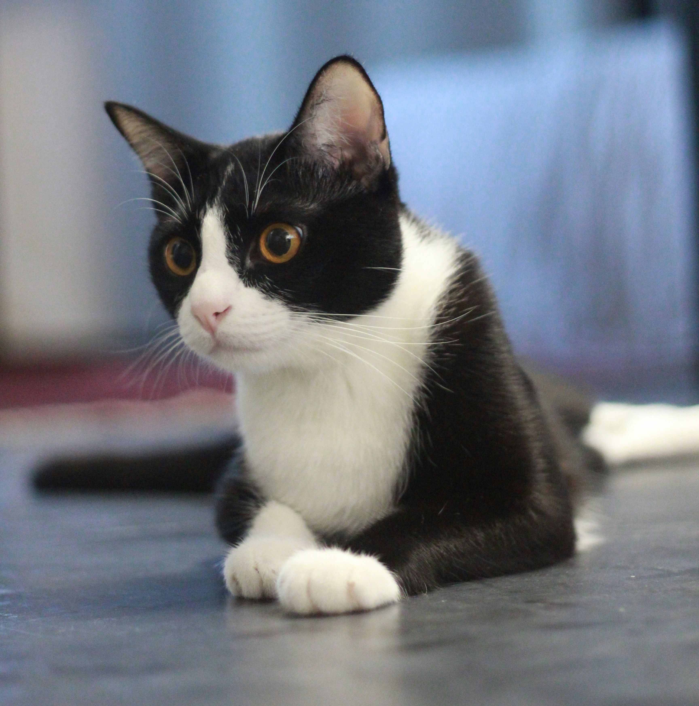
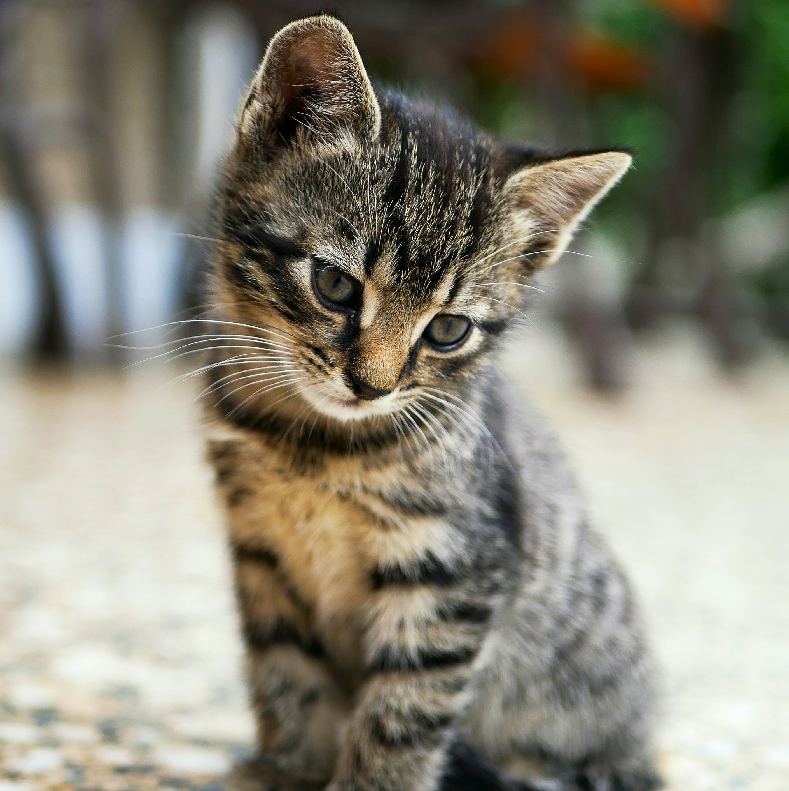
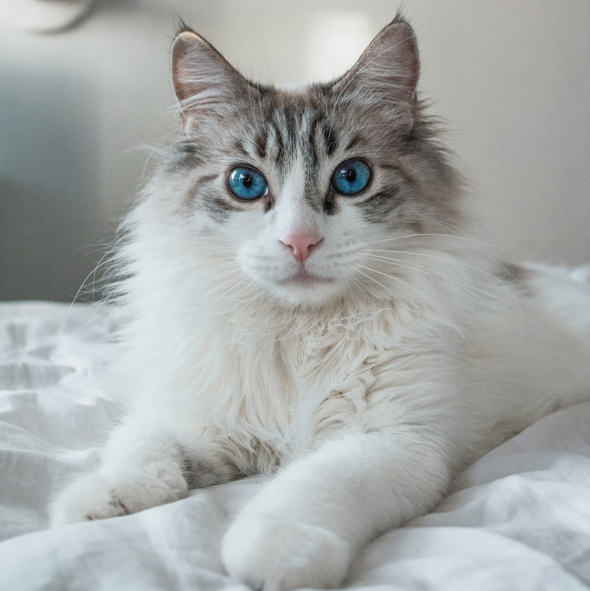
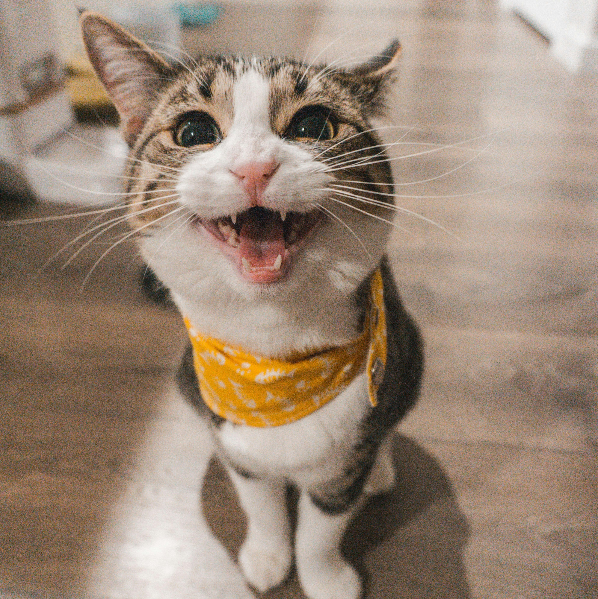
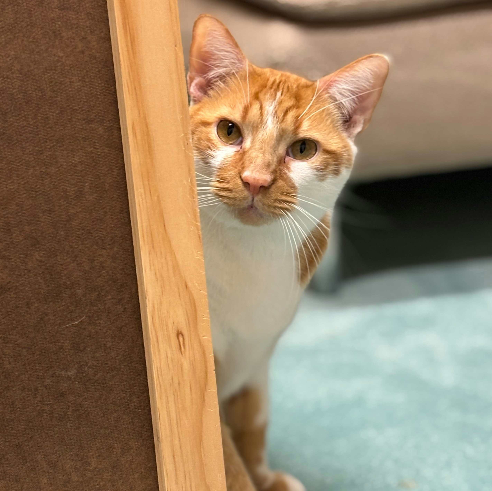
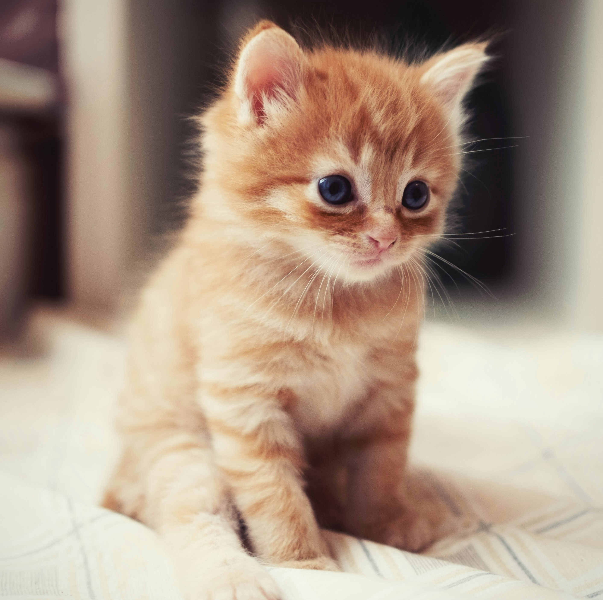

Our Furry Friends

Bobby
Description
A black-and-white tuxedo cat with golden eyes and a curious, observant, and independent personality.

Tiger
Description
A baby brown-and-black tabby with striking stripes, big curious eyes, and a gentle, slightly shy personality.

Elsa
Description
A fluffy grey-and-white cat with brilliant blue eyes and a calm, affectionate, and gentle personality.

Otto
Description
A playful brown-and-white tabby with expressive eyes and a big personality, known for being vocal, energetic, and attention-loving.

Benji
Description
An orange-and-white cat with warm amber eyes and a shy but curious nature.

Mango
Description
Named after the delicious fruit, Mango is a sweet, snuggly orange tabby kitten.